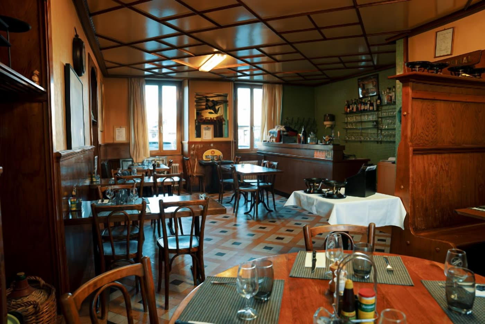
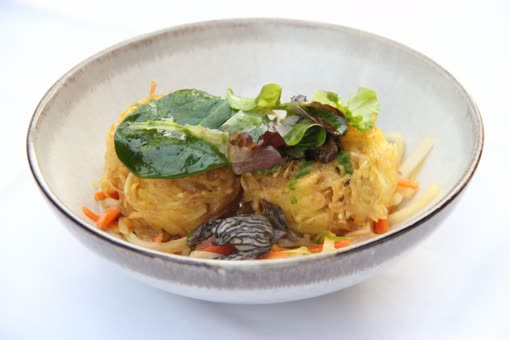
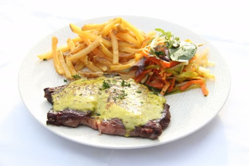
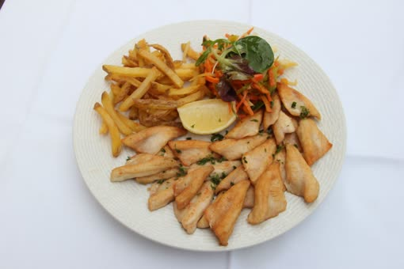
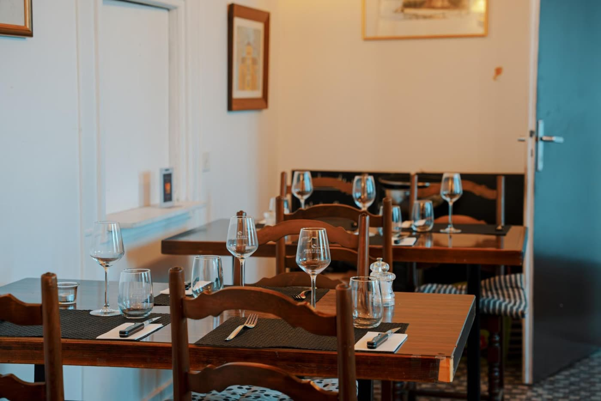

« Un accueil chaleureux et une cuisine généreuse — on reviendra avec plaisir ! »


Label officiel : mets préparés intégralement dans notre cuisine.
Notre histoire
Une cuisine généreuse,
Une cuisine généreuse,
faite maison.
Chaque ingrédient est choisi avec amour et nos plats sont de saison — sans détour par le précuisiné.
Au Bistro Quai 1, on cuisine comme à la maison : de vrais fonds, des sauces montées sur place, un plat du jour différent chaque midi. C'est ce travail qui nous a valu le Label Fait Maison.
« À Bistro Quai 1, le client est au centre de l'attention et la cuisine goûteuse ! » Jean‑Maurice M. · The ForkDécouvrir notre histoire →
4,6Étoiles · 269 avis Google
Fait MaisonLabel de cuisine artisanale
Quai 1Place de la Gare, Saint‑Prex
La carte · produits de saison
Savourez les délices de notre restaurant
Et chaque jour, vous découvrirez notre plat du jour — une cuisine saine, locale, préparée sur place.

Vol‑au‑vent de rösti aux morillesEntrée du jour
14 CHF

Entrecôte sur ardoiseBeurre café de la gare, frites et légumes
38 CHF

Filets de perche du Léman meunière100% local · frites et légumes
45 CHF
La carte évolue au fil des saisons — ceci est un aperçu de la carte de printemps actuelle.
Voir toute la carte →
De la terre au lac
Nos producteurs
La viande
Suisse, sans détour
Une viande qui provient exclusivement de Suisse, choisie avec un producteur local pour vous servir les meilleures pièces.
Maurice Reymond · Villars‑sous‑Yens
Le poisson
Pêché sur le Léman
Nos filets de perche viennent d'une pêche locale et responsable, tout près de notre terrasse au bord du lac.
Manu Torrent & famille Loni · Tolochenaz
Le vin
Des vignerons d'ici
Une région généreuse en vin : nous sommes fiers de proposer une sélection de domaines locaux pour accompagner votre repas.
D. Kind · R. Locher · S. Bugnon
Sous les platanes
Une terrasse au bord du quai
À deux pas du lac, notre terrasse s'installe à l'ombre des platanes dès les beaux jours. Guirlandes de lumière, nappage blanc et grands arbres pour déjeuner au frais ou dîner tard, un verre de vin local à la main.
À l'intérieur, la salle garde son cachet de bistrot de gare : boiseries, carrelage à damier et service attentif, été comme hiver.
Note pour Bistro Quai 1 — à confirmer avant publication
Les trois avis ci‑dessous sont des exemples provisoires (texte et noms inventés) — merci de nous envoyer vos vrais avis (Google, TheFork, ou autre) pour les remplacer avant la mise en ligne.
La note « 4,6★ — 269 avis » (reprise de votre fiche Google publique) apparaît ici ainsi que dans l'en‑tête du site et dans la section « Notre histoire ». Merci de nous confirmer si ce chiffre est toujours exact ; s'il change, il faudra le corriger aux trois endroits.
Ce qu'on en dit
L'avis de nos hôtes
« Très bonne adresse, le plat du jour était excellent et le service très agréable. »
« Belle terrasse au bord du lac, parfaite pour un repas entre amis. »
Réservation
Réservons votre table
Un dîner en tête‑à‑tête, une terrasse entre amis, un repas d'affaires : nous nous réjouissons de vous accueillir Quai 1.
Également réservable sur TheFork · dernière commande 14h00 le midi, 21h30 le soir.